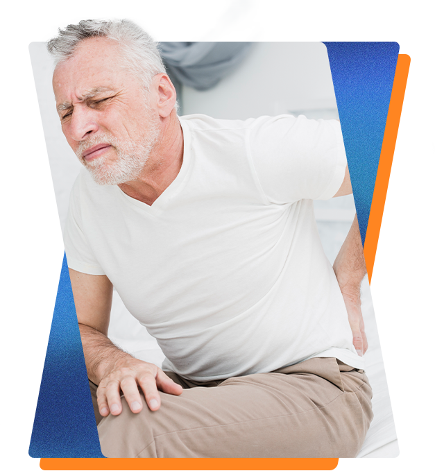

Livre-se das dores e recupere sua mobilidade com tratamento científico integrado
Cuidado individualizado combinando Osteopatia, Quiropraxia, Fisioterapia, RPG e Baropodometria computadorizada no Rio de Janeiro. Agende sua avaliação e volte a viver sem limitações físicas.

Cuidado integrativo focado no alívio definitivo da sua dor
Combinamos métodos comprovados pela ciência para restaurar sua saúde sem procedimentos invasivos.
Tratamento Integrado com Ciência e Holismo
Abordagem fundamentada no melhor embasamento científico que investiga e trata a causa raiz da dor, unindo saúde física e bem-estar corporal.
Agendamento Prático e Atendimento Ágil
Marcação de consultas direta e sem complicações pelo WhatsApp, otimizando o seu tempo e direcionando você para a unidade ideal no RJ.
Recuperação Plena da Sua Mobilidade
Foco total na devolução da funcionalidade e no alívio de limitações físicas, permitindo que você retome suas atividades com liberdade e sem dor.
Soluções completas para dor e reabilitação postural
Conheça nossas especialidades clínicas desenvolvidas para tratar o corpo de forma completa e resolutiva.
Osteopatia & Quiropraxia
Terapia manual altamente especializada com foco na causa primária do problema para o alívio de dores agudas ou crônicas intensas, atuando no alinhamento das vértebras e na descompressão articular e nervosa.
Fisioterapia Traumato-Ortopédica
Investigação, prevenção e tratamento de afecções nos ossos, músculos, articulações e ligamentos para restabelecer os movimentos naturais.
Posturologia
Avaliação postural detalhada para identificação e correção de desvios, encurtamentos, fraquezas musculares e assimetrias corporais.
Baropodometria Computadorizada (Baroscan)
Exame preciso de mapeamento da pisada para identificar disfunções que interferem na marcha e causam dores na coluna e articulações.
Palmilhas Corretivas e Posturais
Confecção sob medida adaptada às necessidades anatômicas específicas de crianças, adultos, pés diabéticos e amputados.
Hipnose Clínica
Recurso terapêutico para o tratamento integrado de transtornos emocionais e psicológicos com manifestação física ou somatização no corpo.
Acupuntura e Medicina Chinesa
Técnica milenar que estimula pontos terapêuticos específicos do corpo para promoção do reequilíbrio energético e alívio de dores.
RPG (Reeducação Postural Global)
Método focado no reequilíbrio das tensões musculares, correção da postura, ganho de consciência corporal e diminuição da rigidez.
Cursos de Capacitação Profissional
Capacitação técnica e aprimoramento profissional voltado para fisioterapeutas, osteopatas e quiropratas que buscam evolução técnica.
Saúde, ciência e cuidado integrativo com foco no alívio da dor desde 2018
Fundada em 13 de Março de 2018 pelo Dr. Ivan Mariano e pela Dra. Loretta de Queiroz, a Diagnostrata Clínica nasceu com a missão de entregar tratamentos especializados e embasados na ciência para dores crônicas e afecções da coluna vertebral. Com unidades localizadas na Barra da Tijuca, Ipanema e Jardim Botânico no Rio de Janeiro, a clínica reúne tecnologia de ponta e um corpo clínico em constante atualização para proporcionar saúde e bem-estar de forma holística, humanizada e resolutiva.
Especialistas dedicados à sua saúde e bem-estar
Conheça os profissionais responsáveis pela direção técnica e atendimento especializado na Diagnostrata.
Dr. Ivan Mariano
Diretor Técnico e Cofundador da DiagnostrataOsteopata e fisioterapeuta, fundador da Diagnostrata Clínica em 13 de março de 2018 ao lado da Dra. Loretta de Queiroz. Atua diretamente na direção técnica e no atendimento de pacientes com dores complexas, lesões de articulação e hérnias de disco, sendo reconhecido pelo atendimento humanizado, atencioso e focado na causa do problema.
Dra. Loretta de Queiroz
Cofundadora da DiagnostrataCofundadora da Diagnostrata Clínica em 13 de Março de 2018, atuando na estruturação e no objetivo de levar saúde e bem-estar fundamentados na ciência aos pacientes.
Lily Jane Doctor
Integrante da Equipe de ProfissionaisProfissional integrante do corpo clínico especializado da Diagnostrata Clínica, atuando na prestação de cuidados terapêuticos e saúde aos pacientes.
Por que a Diagnostrata é referência no Rio de Janeiro
Direção Técnica Especializada e Atualização Constante
Conduzida por especialistas fundadores (Dr. Ivan Mariano e Dra. Loretta de Queiroz), nossa equipe passa por contínuo aprimoramento científico e técnico para aplicar as práticas mais resolutivas do mercado.
Mapeamento Biomecânico com Tecnologia Baroscan
Realizamos exames computadorizados de baropodometria para diagnóstico exato da pisada e confeccionamos palmilhas próprias sob medida, atendendo inclusive pé diabético e amputados.
Abordagem Multidisciplinar Focada na Coluna Vertebral
Atuação integrada no Rio de Janeiro combinando Osteopatia, Quiropraxia, RPG e Fisioterapia para tratar dores intensas e hérnias de disco sem procedimentos invasivos.
Entenda a Causa da Sua Dor para Tratar com Precisão
Aprenda com nosso conteúdo informativo como a Osteopatia auxilia na reabilitação de hérnias de disco sem cirurgia, o papel da Baropodometria no diagnóstico postural e as diferenças práticas entre Quiropraxia, Osteopatia e RPG.
Tirar Dúvidas com Nossos EspecialistasComo funciona o seu atendimento na Diagnostrata
Um processo simples e focado no seu alívio imediato e na reabilitação contínua.
Contato e Seleção de Unidade
Entre em contato via WhatsApp e escolha o atendimento na unidade mais próxima: Barra da Tijuca, Ipanema ou Jardim Botânico.
Avaliação Clínica e Biomecânica
Passe por uma investigação minuciosa com nossos profissionais para identificar o diagnóstico e a causa primária do desconforto.
Plano Terapêutico Integrado
Receba a indicação do tratamento personalizado com Osteopatia, Quiropraxia, Fisioterapia, RPG ou palmilhas sob medida.
Reabilitação e Qualidade de Vida
Acompanhe seus resultados e recupere a mobilidade total, livre das dores que limitavam sua rotina diária.
O que dizem os nossos pacientes no Google
Histórias reais de pessoas que recuperaram a qualidade de vida e o movimento com os tratamentos da Diagnostrata.
"Alguns anos atrás tive uma grave lesão no tornozelo. Busquei diversos tratamentos sem resultado satisfatório, até gerar danos na coluna (hérnia). O Ivan Mariano com muita habilidade conseguiu liberar o movimento do meu pé, restaurando minha mobilidade. Excelente profissionalismo e empatia."
"O dr Ivan é um excelente profissional, que sempre busca entender a causa da sua reclamação. Sentia dores devido a uma hérnia de disco por muitos meses, e hoje tenho uma vida normal, sem dor, depois do tratamento da Diagnostrata."
"Logo após minha primeira visita já obtive resultados extremamente positivos! Excelente profissional, está mais preocupado com a sua melhora do que qualquer outra coisa. Recomendo a todos de olhos fechados!"
"Sou paciente do Dr. Ivan desde 2016 e desconheço tratamento melhor. Capacitado, atencioso e competente como poucos."
"O Dr. Ivan Mariano é um excelente profissional. Cheguei com diversas dores, algumas crônicas, e queixa postural. Finalizei meu tratamento livre das dores e com uma postura muito melhor."
"Dr Ivan presta um atendimento diferenciado. Muito atencioso, detalhista e comprometido com o bem estar do paciente. Obtive uma significativa melhora com o tratamento."
Perguntas Frequentes sobre Nossos Atendimentos
Tire suas dúvidas antes de agendar sua avaliação técnica na Diagnostrata Clínica.
Agende Sua Consulta na Diagnostrata Clínica
Escolha a unidade mais conveniente no Rio de Janeiro (Barra da Tijuca, Ipanema ou Jardim Botânico) para seu atendimento de saúde ou envie sua dúvida sobre nossos cursos profissionais.